Sebuah aplikasi mobile umumnya tidak hanya terdiri dari satu halaman, melainkan beberapa halaman yang saling terhubung. Di Flutter, perpindahan antar halaman dikelola oleh Navigator, yaitu widget yang bekerja seperti tumpukan kartu (stack). Ketika berpindah ke halaman baru digunakan Navigator.push yang akan meletakkan halaman baru di tumpukan paling atas, sedangkan untuk menutup halaman dan kembali ke halaman sebelumnya digunakan Navigator.pop yang menghapus halaman teratas dari tumpukan.
Selain berpindah halaman, seringkali dibutuhkan pengiriman data dari satu halaman ke halaman lain, misalnya mengirim judul dan nominal transaksi ke halaman detail. Hal ini dilakukan melalui Constructor, di mana halaman tujuan menyiapkan variabel bertipe final sebagai penampung data, lalu mewajibkan pengisiannya menggunakan kata kunci required. Pada praktikum ini, mahasiswa membuat halaman transaction_detail_screen.dart yang menerima data dari dashboard_screen.dart saat salah satu baris transaksi ditekan, serta menerapkan Navigator.pop agar formulir pada add_transaction_screen.dart otomatis tertutup dan kembali ke Dashboard setelah data berhasil disimpan.
Navigator.push untuk berpindah ke layar baru.Navigator.pop untuk menutup layar setelah aksi selesai.Dibuat file baru transaction_detail_screen.dart berisi class TransactionDetailScreen yang extends StatelessWidget, karena data yang ditampilkan hanya dikirim sekali dari halaman sebelumnya dan tidak berubah di halaman ini. Empat variabel bertipe final dideklarasikan sebagai penampung data, yaitu title, amount, category, dan date. Variabel wajib bertipe final karena StatelessWidget bersifat tidak dapat diubah (immutable) setelah dibuat.
Keempat variabel tersebut diwajibkan pengisiannya melalui constructor const TransactionDetailScreen({super.key, required this.title, required this.amount, required this.category, required this.date}). Kata kunci required memastikan halaman ini tidak dapat dibuka tanpa mengirimkan keempat data tersebut. Pada method build, data ditampilkan menggunakan Icon(Icons.receipt_long) sebagai ikon struk, Text(title) dan Text(amount) sebagai judul dan nominal utama, Divider sebagai garis pemisah, serta method pembantu _buildDetailRow(label, value) yang menyusun Row berisi label dan nilai (Kategori, Tanggal, dan Status) secara rapi menggunakan mainAxisAlignment: MainAxisAlignment.spaceBetween.
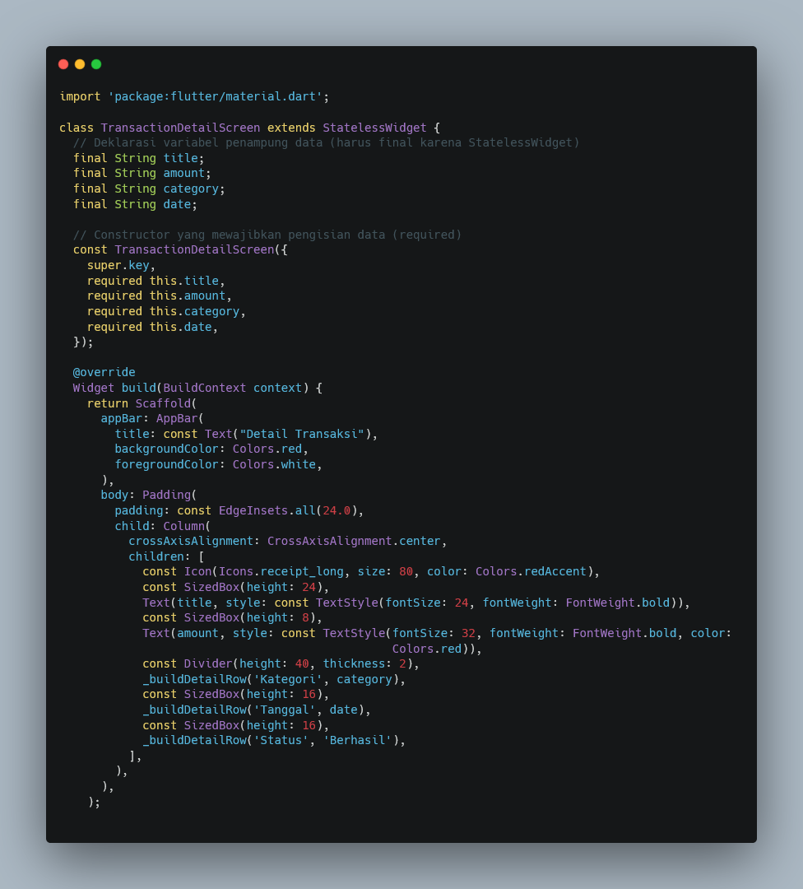
Pada file dashboard_screen.dart, setiap ListTile dalam daftar transaksi diberi properti onTap yang berisi fungsi navigasi. Di dalamnya dipanggil Navigator.push(context, MaterialPageRoute(builder: (context) => ...)), di mana MaterialPageRoute berfungsi membuat rute transisi standar Material Design menuju halaman baru, dan context digunakan agar Flutter mengetahui posisi halaman saat ini di dalam tumpukan navigasi.
Pada parameter builder, dibuat objek TransactionDetailScreen dengan mengisi keempat parameter constructor-nya sesuai data baris yang ditekan. Misalnya pada baris "Makan Siang", dikirim title: 'Makan Siang', amount: '- Rp 50.000', category: 'Makanan', dan date: '13 September 2026'; sedangkan pada baris "Gaji Bulanan" dikirim data yang berbeda sesuai transaksinya. Dengan cara ini, satu halaman detail yang sama dapat menampilkan data yang berbeda-beda tergantung baris mana yang ditekan oleh pengguna.
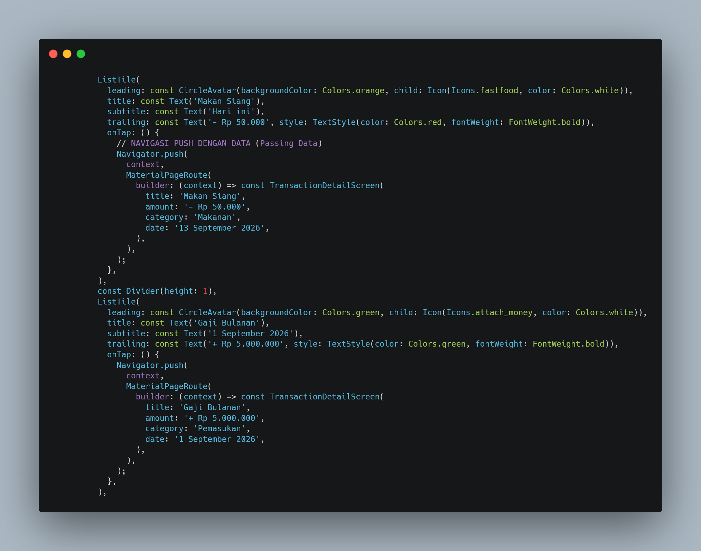
Pada file add_transaction_screen.dart, tombol Simpan tetap menjalankan _formKey.currentState!.validate() untuk memvalidasi seluruh kolom input. Apabila validasi berhasil, ScaffoldMessenger.of(context).showSnackBar(...) dipanggil untuk menampilkan notifikasi hijau bertuliskan "Transaksi Berhasil Disimpan!". Setelah notifikasi muncul, baris berikutnya memanggil Navigator.pop(context).
Fungsi Navigator.pop(context) berperan menghapus halaman AddTransactionScreen yang sedang aktif dari tumpukan navigasi, sehingga aplikasi otomatis kembali menampilkan halaman sebelumnya, yaitu DashboardScreen, tanpa perlu pengguna menekan tombol kembali secara manual. Dengan demikian, alur kerja formulir menjadi lebih alami: pengguna mengisi data, menekan Simpan, melihat notifikasi sukses, lalu langsung diarahkan kembali ke Dashboard.
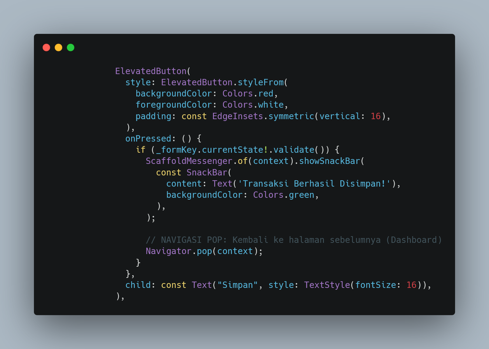
File main.dart pada modul ini menjadi lebih ringkas karena struktur UI dashboard telah dipindahkan ke file terpisah dashboard_screen.dart. Baris import 'dashboard_screen.dart'; digunakan untuk memanggil file tersebut agar class DashboardScreen dapat digunakan.
Fungsi void main() tetap memanggil runApp(const MyApp()) sebagai titik awal aplikasi. Class MyApp yang merupakan StatelessWidget mengembalikan MaterialApp dengan debugShowCheckedModeBanner: false, title: 'Expense Tracker - Modul 4', dan theme: ThemeData(primarySwatch: Colors.red). Warna tema aplikasi diubah menjadi merah pada modul ini, berbeda dari modul sebelumnya yang berwarna ungu (deepPurple), sebagai pembeda visual antar modul. Properti home: const DashboardScreen() menjadikan DashboardScreen sebagai halaman pertama yang dimuat saat aplikasi dibuka, dari mana pengguna dapat bernavigasi ke halaman form maupun halaman detail.
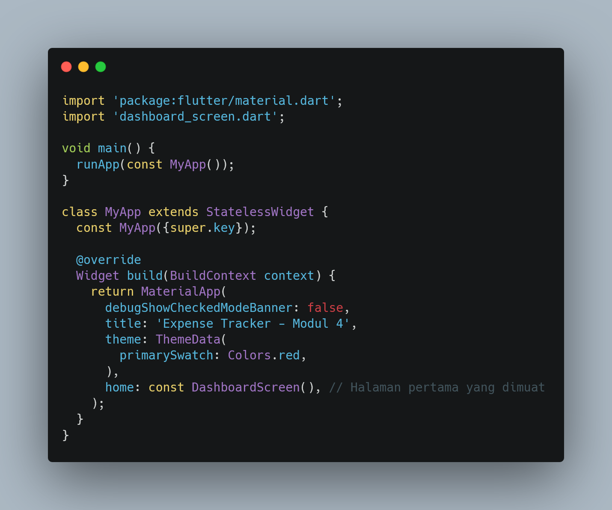
Setelah seluruh file disimpan, jalankan aplikasi dengan perintah flutter run. Halaman Dashboard menampilkan sapaan, kartu saldo, daftar "Transaksi Terakhir", dan sebuah tombol mengambang (FloatingActionButton) berikon tambah di pojok kanan bawah. Saat salah satu baris transaksi ditekan, aplikasi berpindah ke halaman Detail Transaksi dengan tombol "Panah Kiri" yang otomatis muncul di AppBar berkat Navigator.push, serta judul, nominal, kategori, dan tanggal yang menyesuaikan dengan baris yang diklik.
Saat tombol tambah pada Dashboard ditekan, aplikasi berpindah ke halaman Catat Transaksi. Setelah formulir diisi dengan benar dan tombol Simpan ditekan, notifikasi sukses berwarna hijau muncul sesaat sebelum aplikasi otomatis kembali ke halaman Dashboard berkat Navigator.pop.
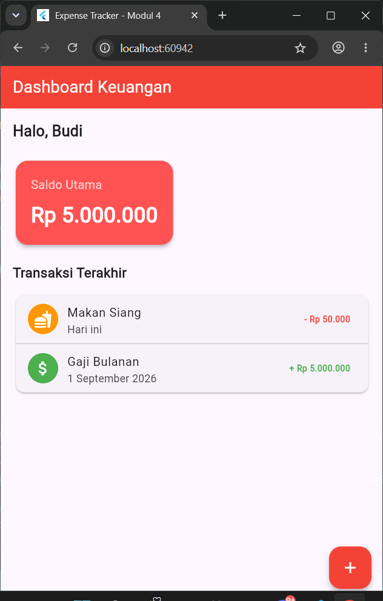
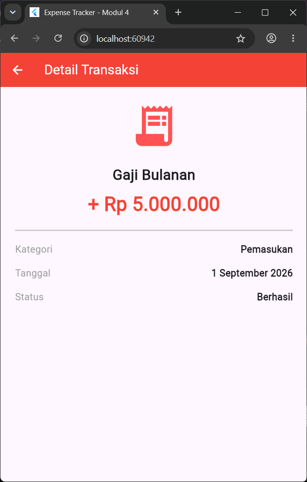
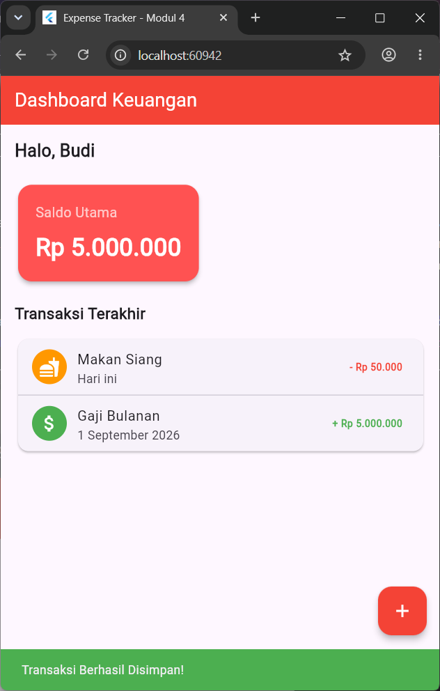
Tugas pada praktikum ini adalah menambahkan satu input baru sebelum tombol Simpan pada add_transaction_screen.dart untuk mengisi Tanggal Transaksi, menggunakan TextFormField biasa dengan format teks DD/MM/YYYY, memanfaatkan fungsi showDatePicker pada tombol plus, dan diberikan validasi wajib diisi.
Ditambahkan satu controller baru di dalam class _AddTransactionScreenState, yaitu final _dateController = TextEditingController();, sejajar dengan _titleController dan _amountController yang sudah ada sebelumnya. Controller ini berfungsi menampung dan menampilkan teks tanggal yang dipilih pengguna melalui kalender.
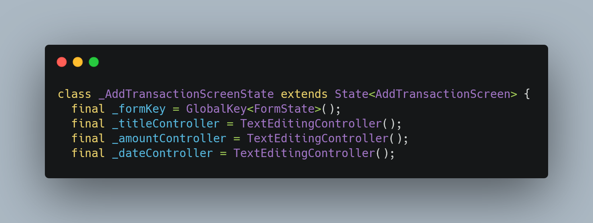
Setelah kolom Nominal dan sebelum tombol Simpan, ditambahkan TextFormField baru dengan controller: _dateController dan readOnly: true, sehingga pengguna tidak dapat mengetik langsung pada kolom ini dan hanya dapat mengisinya melalui kalender. Pada InputDecoration diberikan labelText: "Tanggal Transaksi" dan hintText: "DD/MM/YYYY" sebagai contoh format penulisan tanggal, serta border: const OutlineInputBorder() agar tampilannya konsisten dengan kolom lain.
Di sisi kanan kolom ditambahkan suffixIcon berupa IconButton dengan icon: const Icon(Icons.add) (tombol plus). Pada onPressed tombol ini ditulis fungsi async yang langsung memanggil showDatePicker, tanpa perlu dipisah menjadi method tersendiri. Parameter context diisi dengan context halaman saat ini, initialDate: DateTime.now() menjadikan tanggal hari ini sebagai tampilan awal kalender, sedangkan firstDate: DateTime(1) dan lastDate: DateTime(2100) menentukan rentang tanggal yang dapat dipilih.
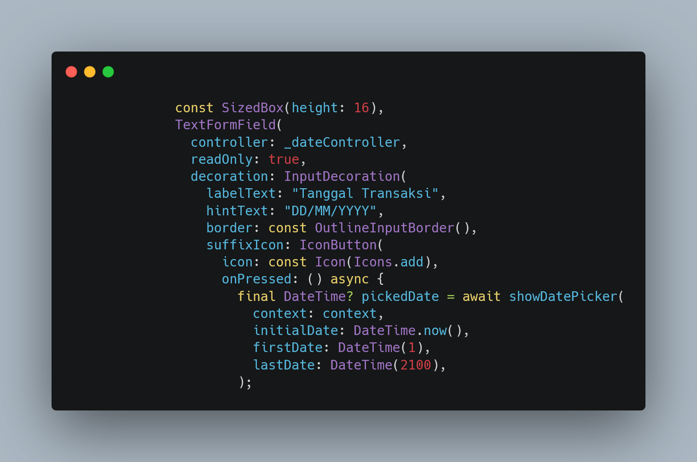
Tanggal yang dipilih pengguna ditampung dalam variabel final DateTime? pickedDate. Apabila pengguna benar-benar memilih tanggal (pickedDate != null), maka di dalam setState() nilai tersebut diformat ulang menjadi teks DD/MM/YYYY menggunakan pickedDate.day, pickedDate.month, dan pickedDate.year. Method .toString().padLeft(2, '0') digunakan pada tanggal dan bulan agar angka satu digit tetap ditampilkan dengan dua digit (misalnya "05", bukan "5"), lalu hasilnya ditempatkan ke dalam _dateController.text sehingga langsung tampil pada kolom.
Pada kolom TextFormField tanggal juga ditambahkan validator: (value) => value!.isEmpty ? "Tanggal wajib diisi" : null, sehingga kolom ini ikut diperiksa bersama kolom Judul dan Nominal saat tombol Simpan ditekan melalui _formKey.currentState!.validate(). Apabila tanggal belum dipilih, pesan error "Tanggal wajib diisi" akan muncul berwarna merah di bawah kolom dan proses penyimpanan beserta Navigator.pop(context) tidak akan dijalankan sampai tanggal diisi.
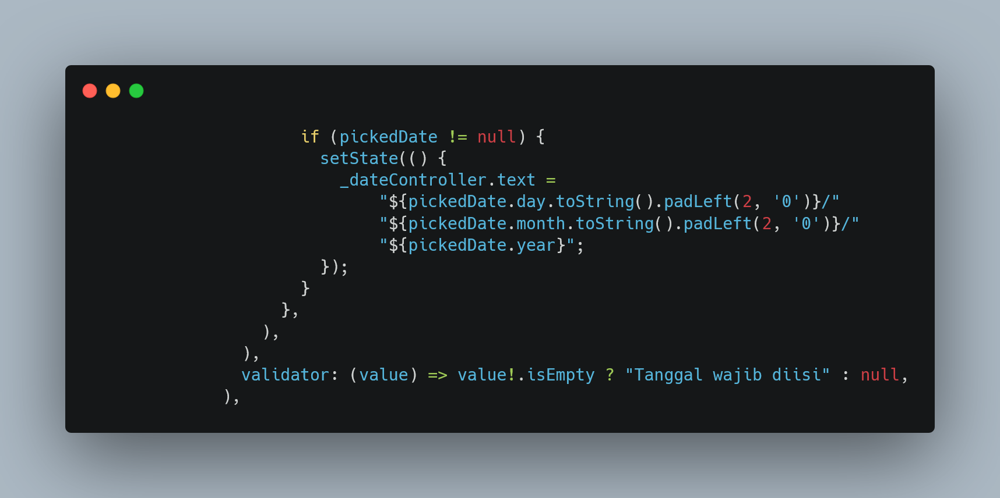
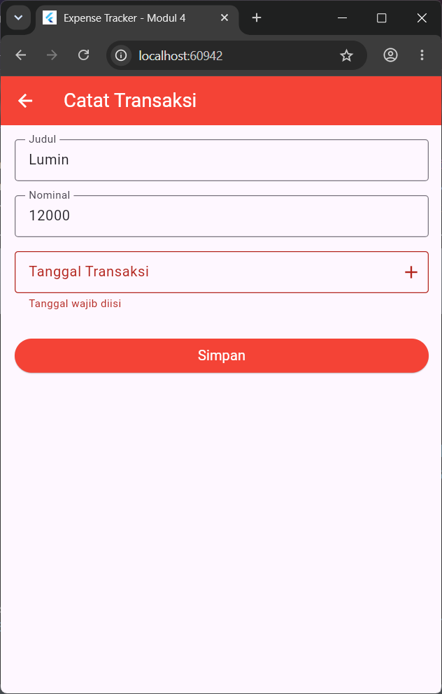
Berdasarkan praktikum yang telah dilakukan, dapat disimpulkan bahwa Navigator pada Flutter bekerja seperti tumpukan halaman, di mana Navigator.push digunakan untuk menambahkan halaman baru ke tumpukan dan Navigator.pop digunakan untuk menutup halaman teratas dan kembali ke halaman sebelumnya.
Pengiriman data antar halaman dilakukan melalui constructor dengan variabel bertipe final dan kata kunci required, sehingga halaman tujuan dapat menampilkan data yang berbeda-beda sesuai data yang dikirim oleh halaman sebelumnya.
Penerapan Navigator.pop setelah proses simpan juga membuat alur formulir menjadi lebih natural, karena pengguna otomatis diarahkan kembali ke Dashboard setelah transaksi berhasil disimpan.
Dengan memahami konsep navigasi dan passing data ini, mahasiswa dapat membangun aplikasi Flutter dengan banyak halaman yang saling terhubung dan bertukar data secara terstruktur.